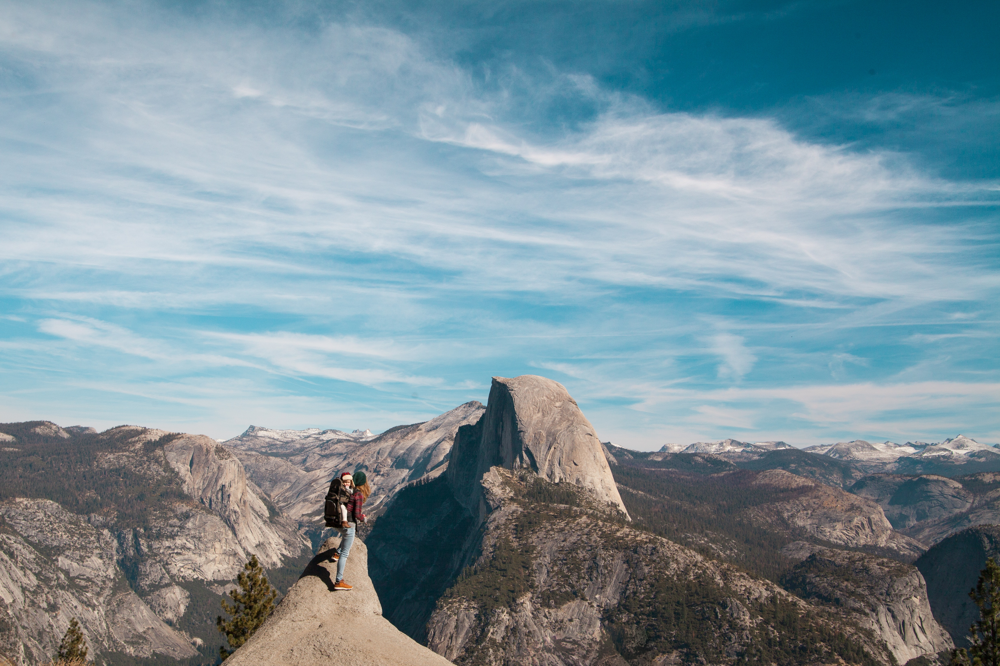
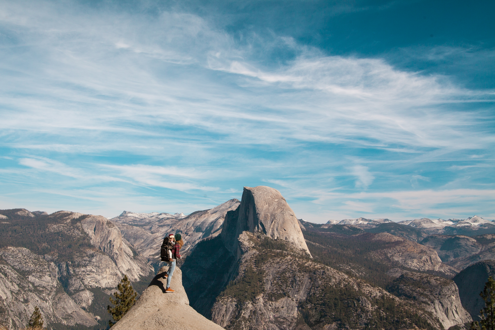

About Adventurous Tourism
 

Welcome to Adventurous Tourism, your gateway to thrilling and unforgettable experiences! We believe that travel is not just about sightseeing, but about pushing boundaries and embracing the extraordinary. Our mission is to provide you with the most exhilarating adventures in some of the most breathtaking locations around the world.Whether you're an adrenaline junkie seeking heart-pounding activities or a nature lover yearning to explore untouched landscapes, we have something for everyone. Our expert team of guides and instructors ensure your safety while delivering an unforgettable experience. Adventure tourism can be lucrative, but it also has risks, so participants must take measures and receive sufficient training. Many adventure tourism companies stress ethical and sustainable methods in order to reduce environmental effect and preserve the natural beauty of the regions in which they operate. Before participating in any adventure tourism activity, it is critical to conduct research and select trustworthy operators, follow safety requirements, and verify you have the necessary physical condition and skill level. While enjoying the excitement and unique experiences that adventure tourism has to offer, always emphasize safety.